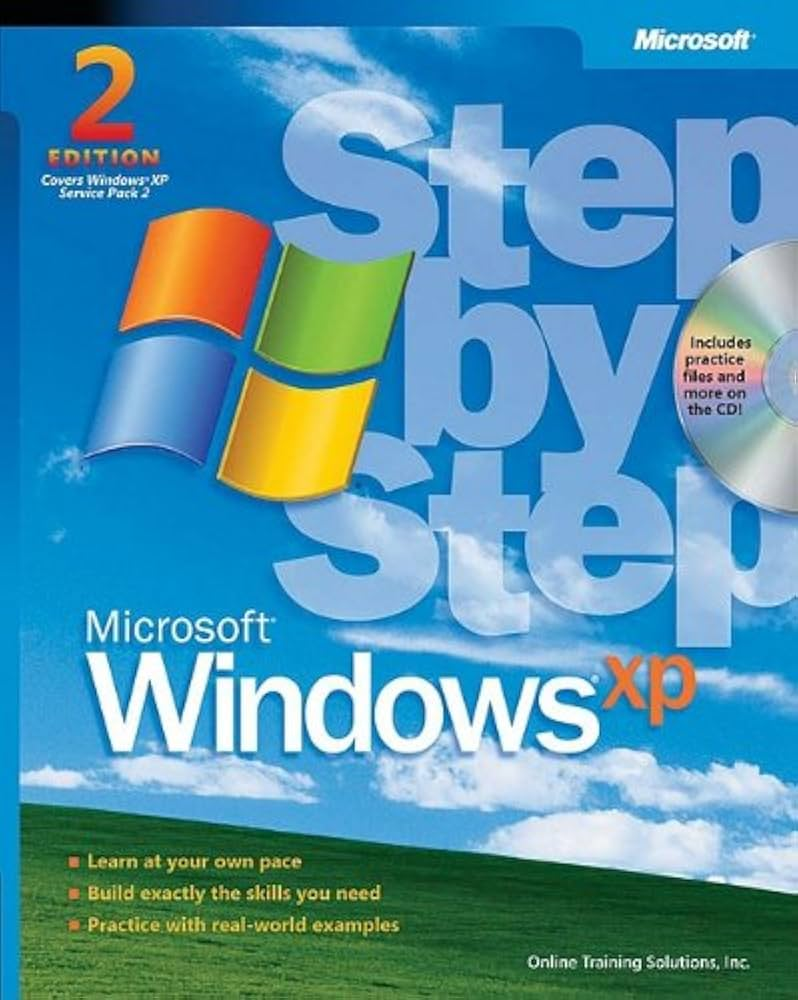
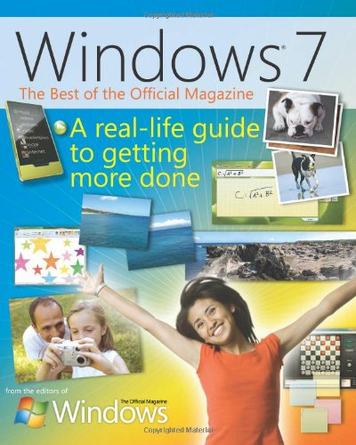
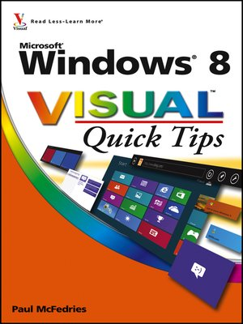
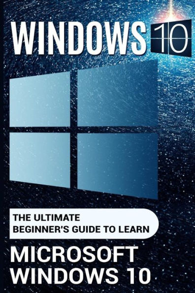
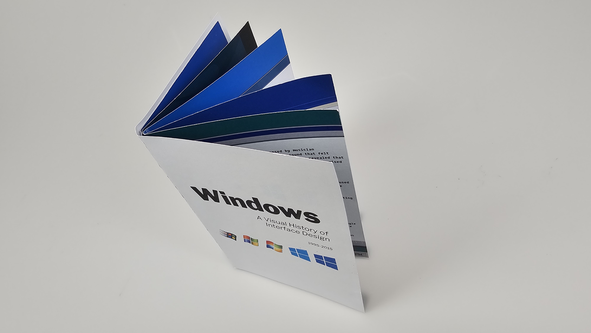
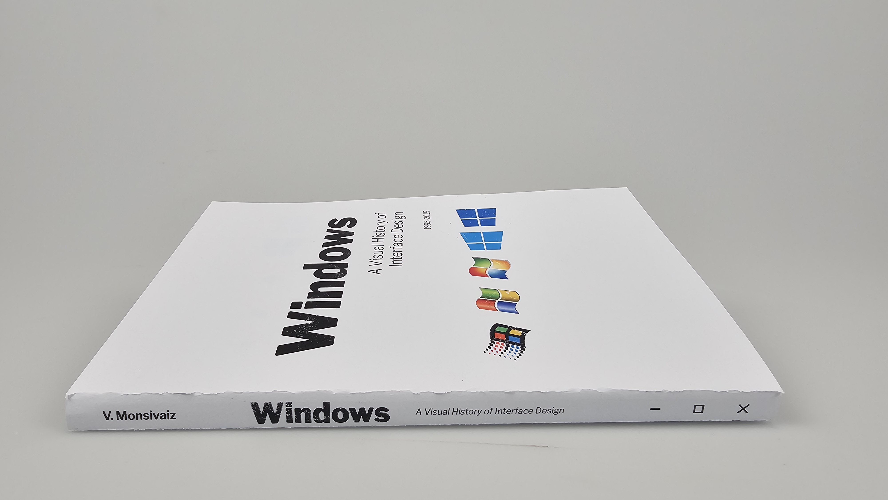
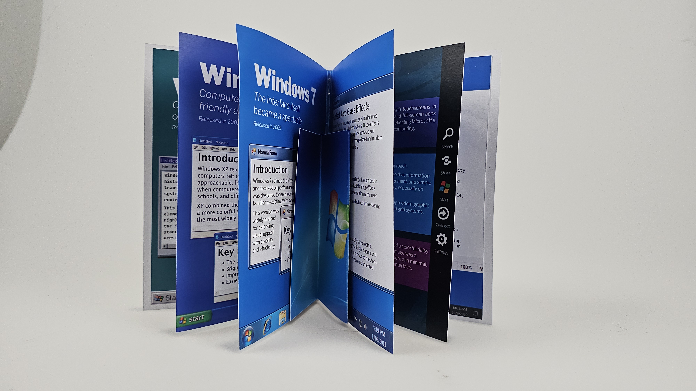

Windows Design Through Time
Microsoft Windows has played a major role in shaping how people interact with computers. Since its introduction in the 1980s, Windows has gone through many visual and functional changes as technology, user needs, and design trends evolved. Fun fact: the reason why Microsoft skipped Windows 9 and went straight to Windows 10 was to avoid critical software compatibility issues, as older programs often checked for "Windows 9" to identify Windows 95 or 98, risking bugs if a new "9" existed. Additionally, "10" was chosen to signify a fresh start after the poorly received Windows 8 and to move away from that era's branding.
What This Site Covers
- Important Windows design eras
- Visual and usability changes over time
- How design decisions affected user experience
- The transition from desktop-focused to touch-focused design

Featured Eras





Each new Windows era introduced new ideas that shaped the future of operating systems and digital design. This website will focus on key, iconic eras. The five eras covered in this website are listed below. They are not the full catalogue of Windows Eras, but are perhaps the most iconic. This website is a companion to the booklet, a form to recieve it is at the bottom of the page. The booklet includes additional information not listed on the website, and is free with completion of the form below.
Booklet
Fill out the form below to request a physical copy of the Windows design eras booklet. This printed booklet includes curated information on major Windows versions and their design impact. Mailing information is collected solely for delivery purposes and will not be used beyond fulfilling the booklet request. By filling out this form you consent to recieving the companion booklet.


